> Oops ... your browser doesn't support the HTML5 canvas element
Current Color:
Target Color:
Controls:
W and S: Move forward or back
A and D: Turn left or right
The near and far values are displayed here.
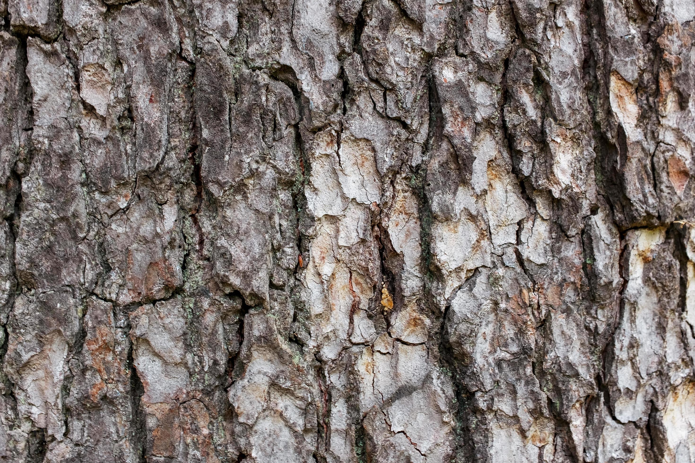
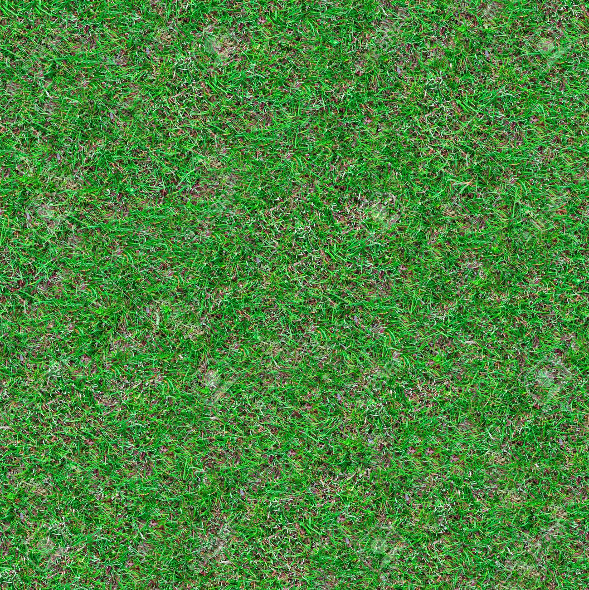
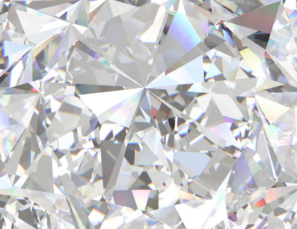
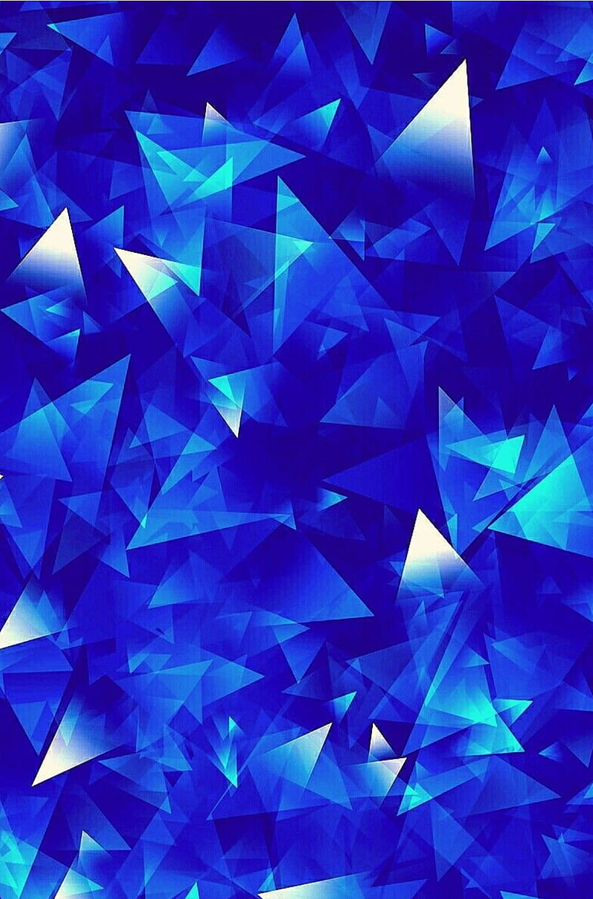 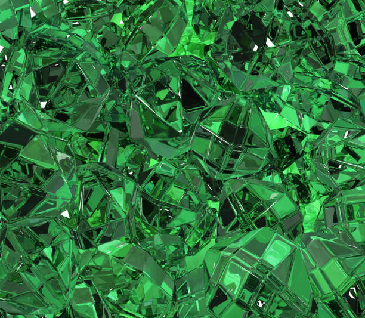
 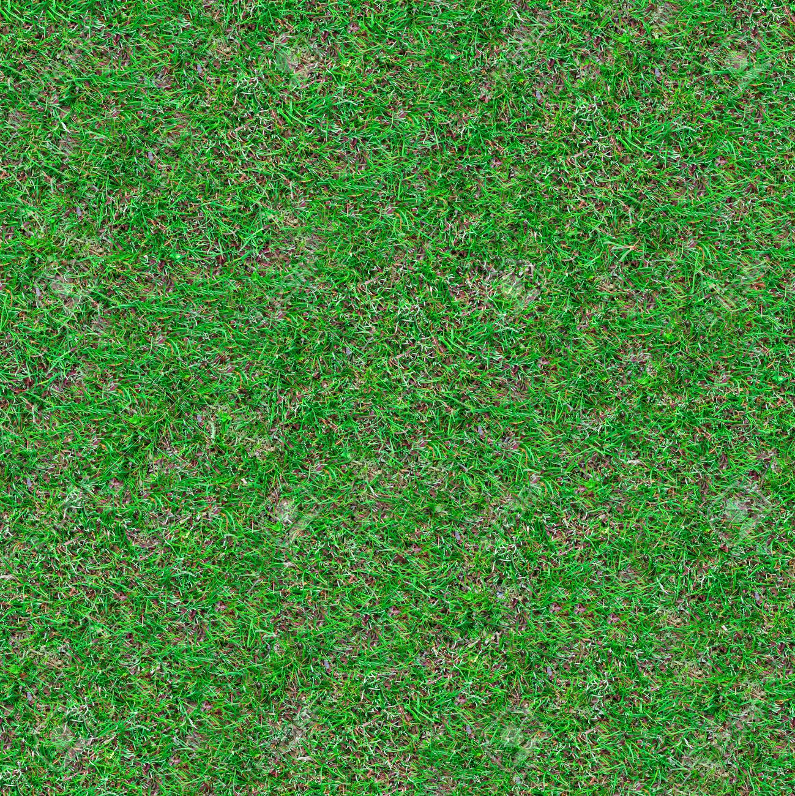
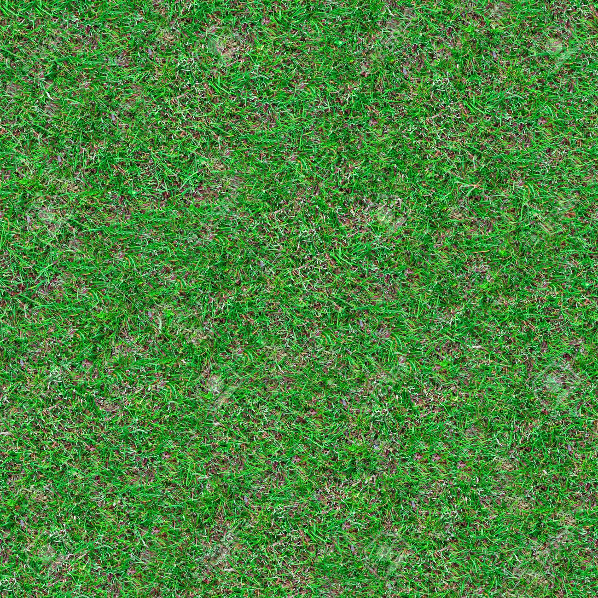
 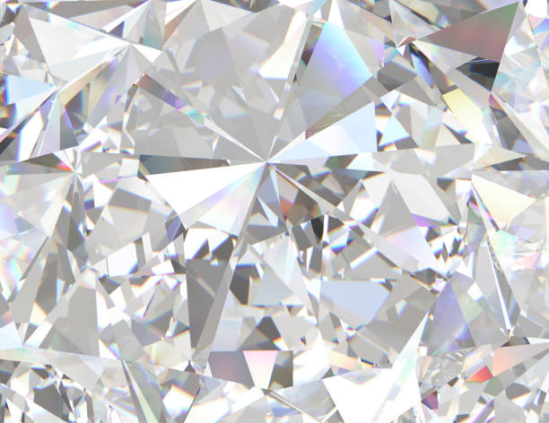
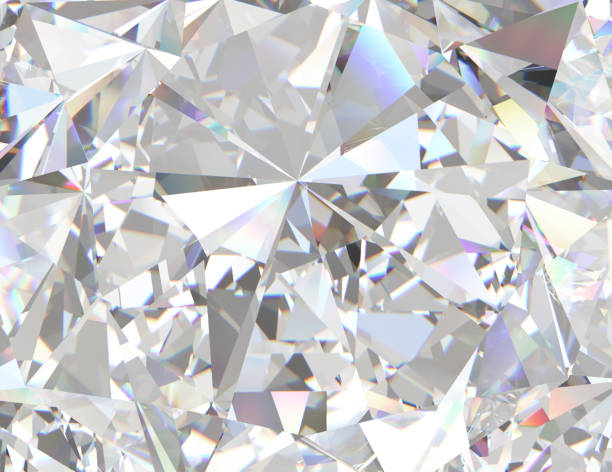
 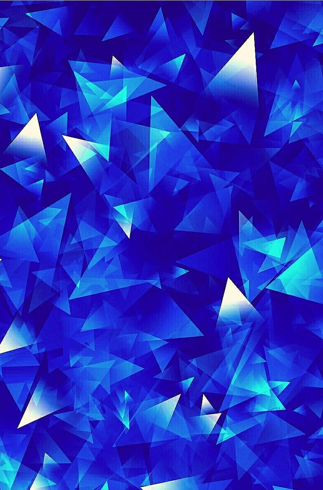
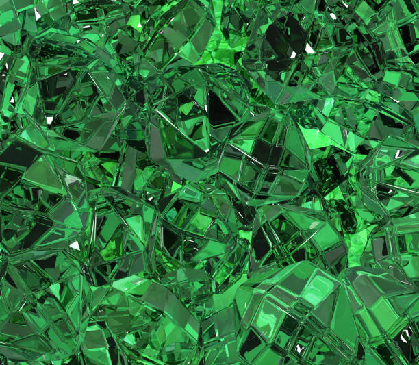
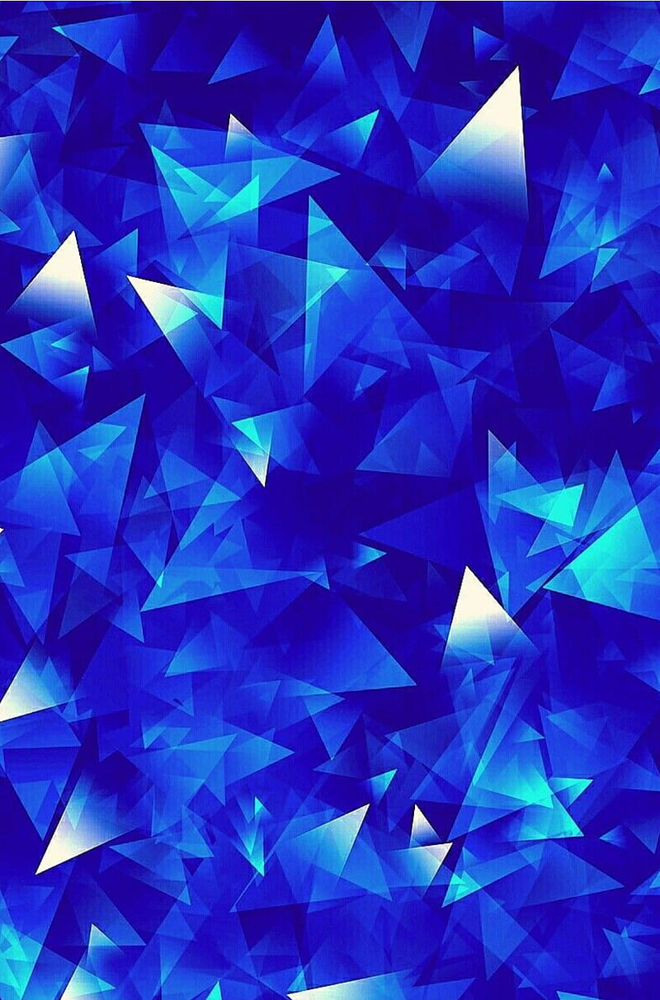
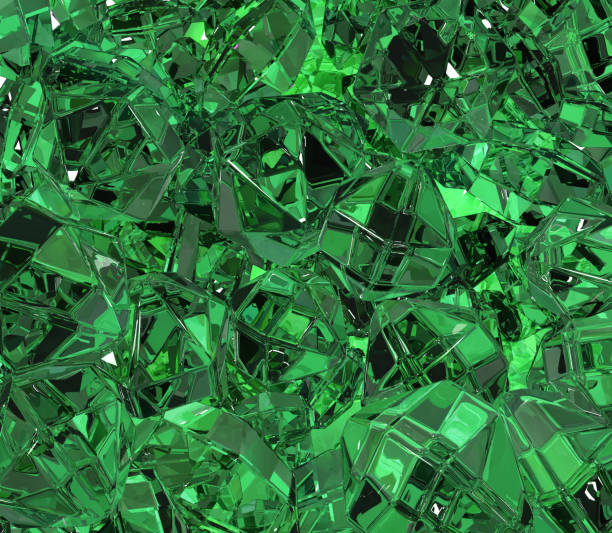